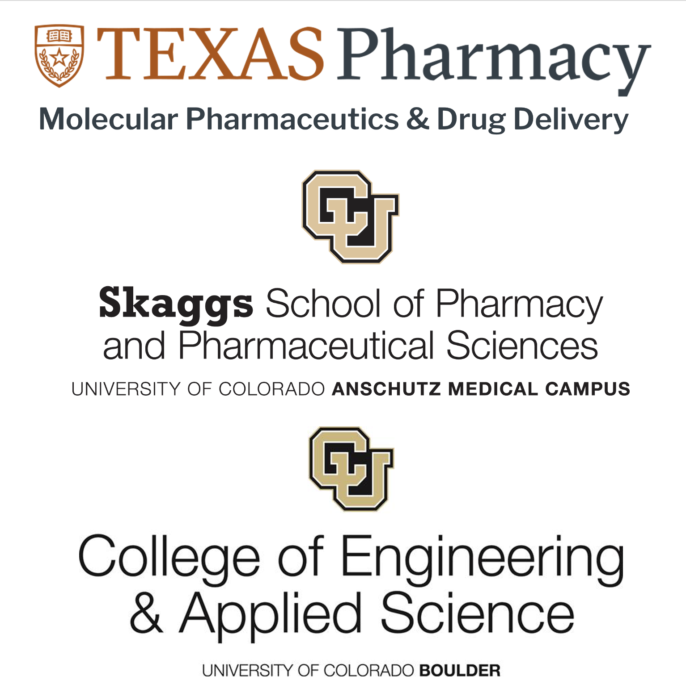
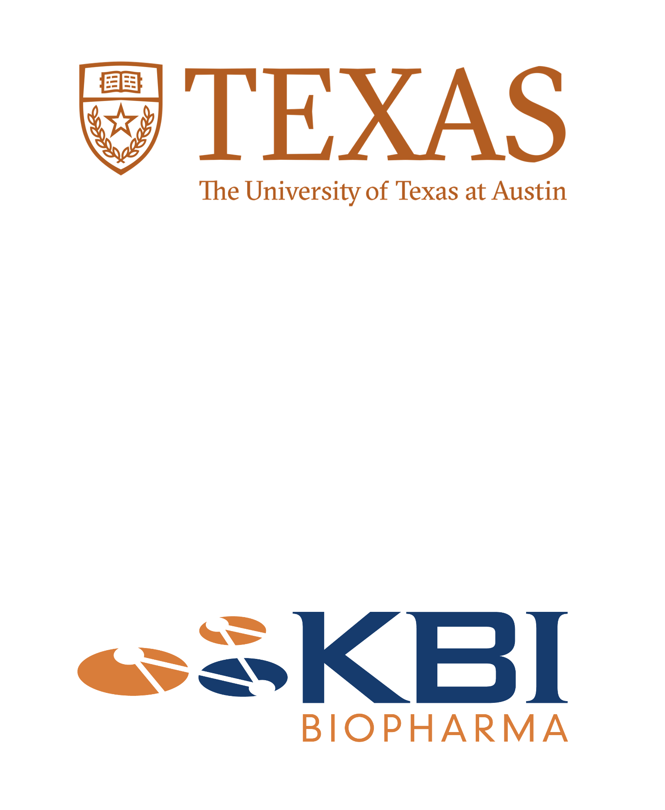
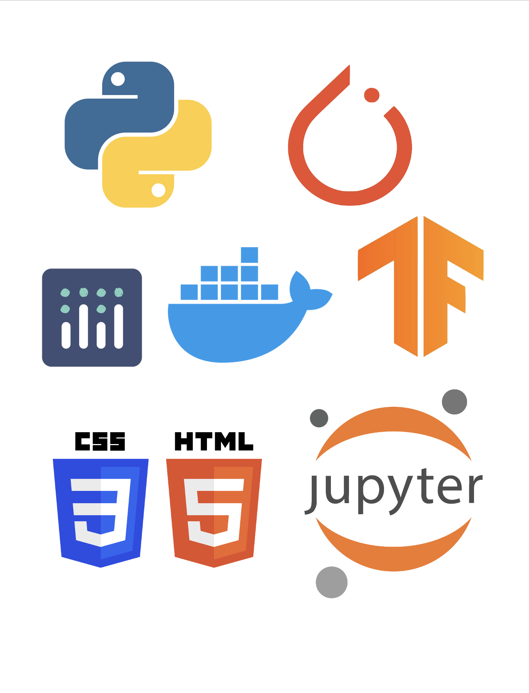

SedNet: A physics-informed operator-learning framework for rapid sedimentation velocity analytical ultracentrifugation analysis
International Journal of Pharmaceutics · 2026; 698:126972
Hello, I'm
Pharmaceutical & Machine Learning Scientist
PhD researcher at UT Austin building physics-informed machine learning to accelerate the characterization of biologic drugs.
Learn about my
University of Texas at Austin
Williams & Cui Labs — Molecular Pharmaceutics & Drug Delivery
University of Colorado Anschutz
Thesis: A Novel Approach for the Correction of Absorbance Measurements for Light Scattering
University of Colorado Boulder
Minor in Biomedical Engineering
I am currently pursuing my PhD at the University of Texas at Austin College of Pharmacy in the Division of Molecular Pharmaceutics and Drug Delivery. I study under Dr. Bill Williams and Dr. Zhengrong Cui, where my goal is to apply scientific machine learning to improve pharmaceutical biologics characterization — with a focus on rapid, physically-informed analysis of complex analytical datasets.
I earned my M.S. in Pharmaceutical Sciences from the University of Colorado Anschutz, where my thesis, "A Novel Approach for the Correction of Absorbance Measurements for Light Scattering," was published in the Journal of Pharmaceutical Sciences in partnership with KBI Biopharma and First Principles Biopharma. My coursework spanned mass spectrometry, machine learning, drug delivery, and protein formulation.
Before that, I earned my B.S. in Chemical and Biological Engineering with a Biomedical Engineering minor from the University of Colorado Boulder, working in the Gin and Noble labs on lyotropic liquid-crystalline membranes for water desalination and chemical-warfare-agent protection — work that led to two peer-reviewed publications.

Learn about my

Before starting my PhD, I was a Research Associate II and Lab Manager at the Proteomics Mass Spectrometry Core Facility at UT Austin. In this role I analyzed samples for researchers on high-resolution mass spectrometers, implemented DIA analysis and its data-analysis pipeline, and selected fragmentation strategies (ETD vs. HCD vs. EThcD) for PTM localization versus sequence identification. I also stood up a de novo sequencing pipeline used by UT Austin's antibody scientists, automated routine system-suitability testing and data management, fine-tuned state-of-the-art bioinformatics ML models, and lectured on the fundamentals of mass spectrometry.
Before that, I was a Senior Research Associate in Analytical and Formulation Sciences at KBI Biopharma in Louisville, Colorado. I became fluent across the biophysical toolkit (AUC, CD, DSC, FTIR, fluorescence, DLS, DSF) and the biochemical toolkit (HPLC, UPLC), serving as KBI's subject-matter expert in light scattering (MALS and DLS) and a mass spectrometry lead across Q-TOF, TOF, Orbitrap, and LTQ platforms. I led statistically-designed (DOE) formulation-development projects across many modalities — AAVs, high-concentration mAbs, oligonucleotides, bacteriophages, and ADCs — advancing toward FDA approval.
Alongside my wet-lab work, I led data-science efforts at KBI. Using Python and Dash, I built applications that cut analysis time and solved workflow bottlenecks — most notably a tool to correct absorbance measurements for light scattering, published in the Journal of Pharmaceutical Sciences in 2023.
Learn about my
A physics-informed operator-learning framework for rapid SV-AUC analysis
SedNet embeds sedimentation physics directly into a machine-learning framework to dramatically accelerate the analysis of sedimentation velocity analytical ultracentrifugation (SV-AUC) data for biologic drug characterization. It extracts interpretable size-distribution information in a fraction of the time of traditional fitting — published in the International Journal of Pharmaceutics (2026).

Python is my language of choice. I picked it up during my Master's thesis and my time at KBI — Jupyter, pandas, and Plotly for analysis and visualization, then Git, Docker, and Plotly Dash for building and deploying web-based scientific applications, including deploying my thesis work to a production website.
Today I work primarily in PyTorch on scientific machine learning: physics-informed neural networks, neural operators, and inverse modeling. At the proteomics core I implemented and fine-tuned leading bioinformatics models — AlphaPeptDeep for retention-time and MS2 prediction, DeepNovo for de novo peptide sequencing, and protein language models like ProGen2 for peptide-to-protein assembly — and I've trained CNNs and random-forest models for formulation development.
At KBI I shipped Python applications that removed critical bottlenecks in analytical workflows: deciphering and deconvoluting large proteomic mass-spec datasets, quantifying nucleic-acid content in viral capsids, and the light-scattering correction tool that became a peer-reviewed publication. I also work in HTML, JavaScript, and CSS (this site included), plus VBA, MATLAB, and Bash on Linux.
Learn about my
SedNet: A physics-informed operator-learning framework for rapid sedimentation velocity analytical ultracentrifugation analysis
International Journal of Pharmaceutics · 2026; 698:126972
Correcting Ultraviolet–Visible Spectra for Baseline Artifacts
Journal of Pharmaceutical Sciences · Vol. 112, Issue 12, 3240–3247
Polymerization of Counteranions in the Cationic Nanopores of a Cross-linked Lyotropic Liquid Crystal Network to Modify Ion Transport Properties
ACS Materials Letters · 1(4), 452–458
Breathable, Polydopamine-Coated Nanoporous Membranes That Selectively Reject Nerve and Blister Agent Simulant Vapors
Industrial & Engineering Chemistry Research · 58(47), 21890–21893
A student-led research group focused on research, education, and outreach in applying machine learning to the biological sciences.
Ongoing community volunteering supporting food access across Central Texas.
Serving the local community through ongoing volunteering and outreach efforts.
Get In Touch